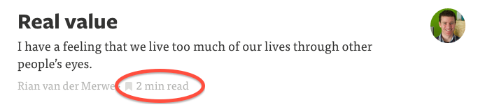

<textarea>


<header class="header">
<h1>Device Menus and Human Choicemaking</h1>
<h2>or: <em>Why are we all wasting time on the internet?</em></h2>
<h3>Joe Edelman / July 2014 / DRAFT</h3>
</header>

<!-- Navigation Interfaces and Human Decision-making -->
<!-- Browsers, Device OSes, &amp; Online Stores that Let Us Live Well -->

<!--
## Abstract

A higher standard of device responsibility in helping us conduct our daily lives well.

A model of how we consider an option and what information we would like to have available to us, such as time costs, money costs, likelihood of various outcomes, better options for similar outcomes, etc.

How to turn the distracting choices which often lead to regret and user burnout into meaningful choices--which relate to values and outcomes that are important to us.

A public data service about people, choices, and outcomes that's implied by these approaches, and how this pubilic data could change search costs and behavior.

Locate these models of informed choice, expressive choice, and collective wisdom in terms of the microeconomics of addiction, behavioral economics, and current social issues like obesity, depression, a lack of meaningful work, sexual dysfunction, clickhole media / the buzzfeedification of media, and "internet addiction".

-->

## Contents

* **[My Phone is My Assistant](#device-responsibility)**
  *How are our devices tricking us? Can they be reformed?*
* **[Honest Choice](#informed-choice)**
  *What information should be associated with options on the screen?*
* **[Expressive Choice](#expressive-choice)**
  *How is personality shaped by choicemaking?*
* **[Looking Back](#life-in-review)**
  *How do honest choices effect our lives?*
* **[Collective Wisdom](#collective-wisdom)**
  *How can public data help us make honest choices?*
* **[Outcome Aligned Economies](#outocome-alignment)**
  *What are the social effects of honest and expresive choices?*

<!--
<a name="device-responsibility"></a>
## Device Responsibility

*Define a higher standard of device responsibility in helping us conduct our daily lives well.*

*** Menus should serve users, not the engagement metrics of the big internet media companies.

We are surrounded by menus.

The thesis of this entire paper is that menus should serve users-- not the engagement metrics of the big internet media companies-- and that the consequences of redesigning menus to align with end-user interest would be huge.

Along the way we'll... look at best practices / warnings, truth in advertising, ... etc ... (with screenshots)

* We need software we can trust *with our lives*.
* We need apps, websites, and devices that won't lead us astray.
* Addiction is directly related to search costs

(( HCI, Linklidder, Victor, Kay, etc? ))

We rely on our phones to communicate and to plan.  So we need software we can trust *with our lives*.  We need apps, websites, and devices that won't lead us astray.

Right now, we can't really trust them.  Consider how biased the information they give us is:  when you receive a notification, you'll generally see additional information next to it.  You'll see whatever information would make you want to click, but you're never shown the information that would give you pause, or would help us prioritize.

We also say it's *dishonest business* when costs are higher that we were informed--e.g., if a sketchy bank charges us unexpected fees.  But *notifications* and other unexpected *time costs* of phones and websites are a tax we pay anew every day.  What would it be like if time costs were estimated for everything, like they are on medium.com?


Or: if a salesman misleads us about the promise of a product, we call him a *charlatan* or a *quack*.  But when an app store indicates a fitness app or a dating app may help us--without providing information about whether they work out for people--something similar is going on.

It is often difficult to figure out best options for ourselves, even if we think abstractly that they may exist.  Facebook may seem like a good way to take a break from work, even though a walk around the block would suit us better.  But we often lack the time or the energy to compare options.

The opportunity for technology, then, is in helping us with that search:  helping us position our hopes regarding a choice--whether they are conscious or unconscious--within wisdom about alternatives, likely outcomes, and likely costs.  If this is done well, users will find it easier to make choices they'll regard as time well spent.  A lifetime reviewed as time well spent then becomes a life well lived.


-->


<a name='informed-choice'></a>
## Honest Choice

This article is concerned with choices to **engage with resources**--e.g., to go to an event, to use an app, to buy a thing, or to follow a link.  These are everyday choices which involve our time and our money.

A thesis here is that we choose to engage with a resource because we are taken with its **promise**, by which I mean an **outcome** we hope will result from the engagament, or a **value** embodied in the choice itself.

Surprisingly often, these are false promises.  Facebook tells us it will be quick break, Sports Authority tells us we will get fit.

False promises are no longer something we have to put up with.  Something our OSes don't do currently is collect data to indicate whether promises are true or false.  I.e., whether the outcomes we hope for are likely.


### Browsing

Here's how browsing works: you're in a window doing something useful, maybe answering emails in gmail, when you notice you need a break.  You type 'f' into the box at the top of your window and it autocompletes and you are browsing facebook or going wherever you go when you decide you need a break.

Many of these choices -- the choice to type 'f' in the box, for instance -- are made in states of exhaustion, absent-mindedness, or procrastination.  We don't want to think very hard, and we use the web browser to help us find out what to do to help us relax or find something exciting and so on.

There's something remarkable about this entire transition. From typing the letter, to selecting facebook from the box, to seeing facebook appear, to scrolling... all of this happens without any explicit representation of what I want or of how much time I want to spend.  I'm trying to relax, to take a break, and maybe I'm imagining it will take 5 minutes.  But there is no where on the screen that the word "break" or "relax" appears or "5 minutes".  It's almost as if the interface wants me to forget my motivating desires as quickly as possible.

So I feel that this goes against this principle that I have, that user interfaces should respect what's important to us, so I have tried to come up with a browser environment that would be more in line with this principle I have.


So what I have here is I've got this extra tag in the URL bar, that captures what my use of the site is about.  If it's not right I can edit it.

And this helps me especially once I start navigating.  For instance, here it is recognizing that there might be different reasons I would want to go to facebook right now.


I can see how well these different uses of facebook have worked out for people.  And I can see--maybe for the first time--if there's something that might be a better way to feel relaxed.

* (facebook does not have a good track record for those two desired outcomes.  In other words, the plugin is telling the user that the outcomes they have in mind haven't worked out often for others.)


I can see it right here on my screen and get help with that.  Clicking or hovering could reveal hints as to what other engagements might work better.


Our everyday hopes, as we buy things, download apps, book appointments, etc--may be of a small enough number that they can be indexed, tracked, intelligently guessed and autofilled, and clearly named. While human pursuits in general are of infinite variety, we can make a good start by tracking, say, terms related to ideal schedules (e.g. "frequent exercise"), ideal personal states (e.g. "getting hitched"), and ideal tactics (e.g., "acting boldly").  Each of these is a small enough set.

Of course the same can work for physical goods:


*Present a model of how we consider an option and what information we would like to have available to us, such as time costs, money costs, likelihood of various outcomes, better options for similar outcomes, etc. *

* The opportunity for technology, then, is in helping us with that search:  helping us position our hopes regarding a choice--whether they are conscious or unconscious--within wisdom about alternatives, likely outcomes, and likely costs.

(( branding and credence papers, max neef, coming insurrection, society of the spectacle ))
((- lozenge, typologies, maps of cost / benefit -))


<a name='expressive-choice'></a>
## IDENTITY AND EXPRESSIVE CHOICE

*Consider how to turn the distracting choices which often lead to regret and user burnout into meaningful choices--which relate to values and outcomes that are important to us.*

*** Users want to express and interact with what matters to them, not merely what's in front of them.


Turning first to web browsing interfaces, let's consider how they might be improved so that, as the user browses, they can express and interact with what matters to them, not merely what's in front of them.


I've spent a lot of time making user interfaces, which are mostly menus of various kinds.  In other words, they are environments for making choices.

And I've noticed that people tend to choose from what's in front of them.  This means that whomever designs the menus is very powerful, because people will make a lot of choices based on the information on the menu, and rarely consider options that aren't on the menu in front of them.

To the extent that our identities are shaped by the choices we make, the person who designs the menu can shape our identity.  This is not the domain of a responsible/trustworthy device.  A trustworthy device must let us shape our own identity, which means that our menus need to be malleable based on what's important to us.

* Increasingly we make choices using the device, rather than just researching options, and communicating.

(( ted talk lady, r marie cox ))
((- map of goals, dreambox, profile box -))

I've spent a lot of time making user interfaces, which are mostly menus of various kinds.  In other words, they are environments for making choices.

And I've noticed that people tend to choose from what's in front of them.  This means that whomever designs the menus is very powerful, because people will make a lot of choices based on the information on the menu, and rarely consider options that aren't on the menu in front of them.

So I've come to believe that user interfaces should go out of their way to adapt to what's important to us, otherwise they can become a dangerous source of regret and missed opportunity.  *People need to be able to express what matters to them, not merely what's in front of them, and they need information that helps them pursue their real interests without being too often misled.*

Interfaces should respect what's important to us and adapt themselves accordingly.


<a name='life-in-review'></a>
## LIFE IN REVIEW, SEARCH COSTS, & REGRET

*** A regrettable choice is not a character defect or a weird preference, but a lack of options at hand (i.e. with low search costs)

* When we think about improving lives or ending addictions, it makes sense to think in terms of providing better opportunities at the moment of choice.

* The test of a device-assisted choice is that the user is glad about what they did on review.

* The activities that we regret are the ones where we know (at least later) that we could have done better for ourselves, if search costs had been lower.  In the case of the donut, we could have found better food, and in the case of facebook, a better form of social engagement, but the search itself seemed exhausting.

* What we know about unexpected costs, addiction, regret

(( becker murphy and other addiction models))

The tech industry has difficulty talking about user choice.  At times, we speak of the user as having no agency--using terms like optimized funnels, addiction, novelty-seeking, dopamine, or getting users hooked on one of the [seven deadly sins](http://thefirstpart.com/2010/11/14/innovation-part-ii-build-for-the-seven-deadly-sins/).  At the same time, we invoke user agency by explaining engagement with our products via clicks, views, and repeat users as articulation of what the user "wants".

<div class="sidenote">
Which explanation we choose is vital:  for explanation (a), its important to provide "speedbumps" or to otherwise deprive the addict of their drug.  For the others, the focus should be on providing better situations for people and better opportunities at the moment of choice.
</div>

Economics has done better.  Starting with the difficult case of explaining "addictive" behavior, we find three common types of explanations:  (a) as a kind of impairment of the ability to choose  ("OMG I just spent 4 hours on facebook."), (b) as a rational choice made with a misunderstanding  ("I thought I could spend just a few minutes!" or "I thought it'd make me popular and happy!"), or (c) as a rational choice made in a bad situation ("Life sucks lets get high and watch cat videos.").

Although pop culture is stuck with explanation (a), economists have focused on (b) and (c) because of [a landmark paper by Becker and Murphy](http://www.jstor.org/discover/10.2307/1830469?uid=3737864&uid=2&uid=4&sid=21104100113327) which found that cigarette smoking and heroin use are sensitive both to announcements of future tax levels and to independent improvements in life circumstances.  That is, people do stop doing heroin when they suddenly have a chance to go to college, and they can stop smoking if they figure out it's going to be more expensive than they thought.  I.e., if they recalculate the direct costs or opportunity costs.

That said, the overwhelming majority of heavy smokers regret their decision to start.  Indeed, some decisions we make more often--buying a donut, downloading angry birds, visiting facebook--have quite a high chance of being regretted, especially if we feel later we could have organized something social, more fun, healthier, etc, for ourselves.  What is this regret all about?  Did we or did we not make a choice?

One explanation is that we have states of mind where it is too difficult to figure out better options for ourselves, even if we think abstractly that they may exist.  The activities that we regret are the ones where we know (at least later) that we could have done better by ourselves.  In the case of the donut, we could have found better food, and in the case of facebook, a better form of social engagement, but the search itself seemed exhausting.

<div class="sidenote">
Unfortunately, the &ldquo;engagement metrics&rdquo; which are driving attention on phones are in conflict with this. An internet built on virality, popularity, top grossing and most downloaded apps, clicks, views, likes, shares, reshares, etc--fosters a kind of group impulsiveness that leads away from time well spent.
</div>

<div class="highlight">
The opportunity for technology, then, is in helping us with that search:  helping us position our hopes regarding a choice--whether they are conscious or unconscious--within wisdom about alternatives, likely outcomes, and likely costs.  Do this well, and our users will find it easier to make choices they'll regard as time well spent.  A lifetime reviewed as time well spent then becomes a life well lived.
</div>


<a name='collective-wisdom'></a>
## Collective wisdom

*Describe the public data service about people, choices, and outcomes that's implied by these approaches, and how this pubilic data could change search costs and behavior.*

*** If regrettable choices / lives in review regretted are a function of the options at hand, then the metrics we use to surface media are paramount. .... Metrics like viewers views clicks will mean more regretted hours and metrics like five star review count and outcomes going well will mean more lives well lived.

** When we think about improving lives or ending addictions... Mostly this amounts to transmitting wisdom rather than impulse through our networks.

* What parts of us are we gathering up?

* obesity, depression, a lack of meaningful work, sexual dysfunction, clickhole, ...

(( postman, other info econ, especially the other becker paper ))
((- google now and siri, profile page, other OLL pages -))

If 60% of people regret visiting youtube on a tuesday night, you should know that before you click a suggested video.


### Dreamboxes

Clicking or hovering could reveal hints as to what other engagements might work better.


Our everyday hopes, as we buy things, download apps, book appointments, etc--may be of a small enough number that they can be indexed, tracked, intelligently guessed and autofilled, and clearly named. While human pursuits in general are of infinite variety, we can make a good start by tracking, say, terms related to ideal schedules (e.g. "frequent exercise"), ideal personal states (e.g. "getting hitched"), and ideal tactics (e.g., "acting boldly").  Each of these is a small enough set.


### Wisdom

If we were to collect a small number (say [50,000](/OpenOutcomes/)) of these reviews, we might have a significant public resource.

How do people change their activities as they learn about what's possible or what satisfies them?  When the same user reviews different engagements for a set of desired outcomes, we can answer important questions. In the map below, an arrow is drawn when reviewers tend to migrate from one activity to another activity, and the latter activity is reported to satisfy their desires more effectively, so they stick with it.


Many such maps are possible, creating an opportunity for data visualizers and storytellers [to map our collective wisdom](/OpenOutcomes/). What do people that want to "be successful" or "get fit" tend to want 6 months or a year later?  Which desires are the most durable--are you making a big choice based on fleeting interests?  What works best for getting fit--apps, gyms, trainers, fitness buddies, or equipment?  What have people tried first and then given up on?

<div class="sidenote">
Collective wisdom about outcomes may eventually be a distributed, internet-level concern, below the content and application layers.
</div>

A community resource to answer these questions quantitatively would be consequential.  As a data API, it'd be a google maps or OpenStreetMap for life decisions--augmenting all manner of shopping, browsing, and list experiences, allowing users to sort by likely outcomes, relevancy to their own desires for personal growth or scheduling, etc.

Such an API could be used for everything from sourcing and sorting suggestions for friend get-togethers:

<div class="sidenote">
This interface was tested with a few thousand users as part of a defunct startup. The results suggested that user behavior can change significantly when recommendations are ordered by desired outcome and ranked by reported likelihood of an outcome working out.
</div>


To labeling and filtering the entries in Facebook Newsfeed that are relevant to your short-term desires.

While such a data API could be popular, so would a rendering of the data as a destination and community site. It'd be like Wikipedia [or Quora](http://www.quora.com/Life-Lessons/What-is-the-one-thing-that-people-wish-they-had-known-about-life-when-you-were-in-your-20s-d-2), but focused on life choices made, what they were about for the individuals involved, and how it all worked out.  Visitors could review choices about downloading/using apps, websites, products, etc--but they could also review larger engagements, like moving to a new city, going freelance, etc.


### Recommenders and Calendars

* Recommenders, how choices are increasingly made

Of course, we don't do very much of our choosing in the navbar.  Algorithms like like Facebook Newsfeed and Google Now structure more of our discretionary time.  And these are even more important to align with our true interests.

We can look at reorganizing device home screens, new groupings in recommendation and discovery interfaces like Google Now, and changing how apps address users, by switching from plain text notifications to value- and outcome-tagged suggestions.


Our goal is to provide data at the moment when important life choices are made, including discovery, purchasing, calendaring, and browsing choices.  That can mean changing which objects we model in software.  For instance, in calendaring, activities could become first class objects:

<div class="sidenote">
Two Lives Left -- a calendar app for visualizing your life and adding exercise, friend dates, and whatever makes you happy, and with a web of new activities (not just events!) to add to your calendar. https://itunes.apple.com/us/app/sand-calendar-day-planner/id687579461
</div>


<a name='outcome-economy'></a>
## Outcome economy

*Locate these models of informed choice, expressive choice, and collective wisdom in terms of the microeconomics of addiction, behavioral economics, and current social issues like obesity, depression, a lack of meaningful work, sexual dysfunction, clickhole media / the buzzfeedification of media, and "internet addiction"*

*** Organizations in an economy can be said to be *outcome-aligned* if they have no economic interest besides positive outcomes for those who come to them.

* ((Finally we'll ask whether augmenting OSes and browsers with displays for *expressive and honest choice* could direct attention and cashflow towards better providers and sites--i.e., those which produce the best outcomes, best likelihoods, and lowest costs in users' lives, rather than those with viral loops, network effects, marketing deals, or other advantages.))

* Verifying outcomes
* ((We'll ask whether, by using this new labeling system and public data, we may be able to switch from marketplaces that are mostly about transactions to marketplaces for personal outcomes.))
* obesity, depression, a lack of meaningful work, sexual dysfunction, clickhole, ...
* Social problems can be solved by transitioning to a marketplace for personal outcomes.

(( folbre, story of stuff ))
((- report for facebook, leaderboard, consumer spending, hours desired -))
((* pull from hackpad shared with jordan and jim, and ACE omnigraffle *))


### Verifying outcomes

Acquiring data about which product and choices product which outcomes is our next challenge.  This job is not unlike what product reviews are supposed to do.


The venerable five-star review--while it guides us better than popularity and virality metrics--doesn't ask about outcomes.  A product like Angry Birds can receive excellent reviews and still be a regretted engagement for many users.  Besides unexpected time costs, someone might have downloaded angry birds to take a relaxing break from work, then later found that they weren't relaxed, or that there was an option that worked better for them for work breaks.  We need a review that will capture all of this.

The task is to remind reviewers of the costs involved in the engagement (time and money, ideally as authenticated via the service provider or the platform), then to give them a quick and articulate way to report what the engagement was *about*, how their desired outcomes have worked out so far, and what else has happened.  Occasionally, they'll need to be explain that an engagement was about something new--an outcome not in our database.

Here's a first attempt at such a retrospective review:


It won't take millions of reviews.  But to provide meaningful signals across all the top apps and web products, we will need an articulate, representative, and thoughtful set of reviewers.  Like the Nielsen families we for TV, but collecting a greater range of engagements, and capturing what each of them was about.


### Social benefits of informed choice

The epidemics currently facing the modernized countries--obesity, social isolation, depression, a lack of meaningful work, etc--indicate that our true interests as the "users" of the economy are disturbingly misaligned with the interests of industry and marketing, which focus on clicks, views, downloads, and sales, rather than on our long-term desired outcomes.  To realign our society will require both (a) detecting when and how best our true interests can be satisfied, and (b) changing incentives for businesses and organizations to match reports of long-term satisfaction.  It may be that implementing *informed choice* on our smartphones will accomplish both, by redirecting demand to the best choices.  But even if informed choice interfaces are insufficient to change demand, we can be sure that retrospective reviews will provide a better measurement than do clicks, views, etc, of what was in our true interests and what was not.  We can then decide as a society how to disincent businesses which leading us into activities we regret and report high costs and bad outcomes.

In 1930, economist John Maynard Keynes claimed that the sales metrics that drive capitalism would at some point start driving us in the wrong direction.  He writes that our society would have a collective "nervous breakdown" unless:

> "we shall once more value ends above means and prefer the good to the useful. We shall honor those who can teach us how to pluck the hour and the day virtuously and well."

Let's follow Keynes' advice.  Can we measure demand with the question &ldquo;what are you glad that you bought?&rdquo; instead of &ldquo;what did you buy?&rdquo;, or online, with &ldquo;what are you glad you clicked?&rdquo; rather than &ldquo;what did you click?&rdquo;  Can we tether the lifeblood of our economy--cashflow, attention, and resources--to reports of informed and fulfilled lives?  Would people then work together to create the best outcomes for one another--in much the same way they currently collaborate to generate sales, clicks, and views?

If we imagine an outcome economy--our society re-gearing around longer-term forms of satisfaction: How would it be different from the consumption economy we have today?

<div class="sidenote">
<a href="http://www.nytimes.com/interactive/2008/05/03/business/20080403_SPENDING_GRAPHIC.html">explorable map from nytimes.com</a>
</div>


<!----

(allows us to make nuanced choices during use that are in our best interest)


## Costs

Deciding whether using an app, attending an event, etc is *worth it* means assessing costs and benefits.  Turning first to *direct costs*--i.e., currency costs and time costs--we find asymmetric expectations for transparency.   When a product or service has a money cost, we demand a high level of transparency:  products are listed with their prices, and it's bad business if there are hidden costs, unexpected fees, or other tricks.


But! We put up with hidden *time costs* every day.  Only a few web products display estimates of time to engage.



Obviously some products would need to be unbundled to have their direct costs make sense:


## Benefits

Benefits are more subtle.  Images of what we desire guide us subconsciously, and we don't know exactly what we are searching for. Nonetheless, as we browse options, we have certain idealized outcomes in mind that structure our search, and we make local choices with those in mind.

The closest thing to a standard for conveying benefits are the [highlighted phrases](http://en.wikipedia.org/wiki/Collocation) pulled out of reviews by Yelp, Amazon, and Google.


The phrases capture *features* of a product or service, like "great view" and "mozarella sticks", but they don't capture our actual hopes, which are both more general and more specific--things like "quality time with friends", "an adventurous weekend", "feeling refreshed", "getting fit", or "learning to knit".  A few products do go more directly after these outcomes.


The products above--Yelp, DIY, Meetup--are especially aligned with user wellbeing.  Only when there are plausible-sounding outcomes can a company advertise them explicitly, which is why cigarette and beer commercials have to be so oblique.  But even companies like Yelp or Meetup do not attempt to provide information about how efficiently or often the use of their product addresses our desires.  Plainly, what is the probability of reaching each benefit by using the product for a given investment of time?

Indeed, it's not clear if anyone knows the overall likelihood of getting fit by joining a running meetup, or finding a life partner by investing 40 hours in a dating app.  Do these things work out?  What kind of investment is required for what kind of payoff?  How do the alternatives compare?  The data will likely be fuzzy, different for different demographics perhaps, but why not collect it and see?


-->


## Next steps

Help us with [the OpenOutcomes project](/OpenOutcomes/), which will collect the first 50,000 reviews and find exciting stories to about what people try vs what works out, within the areas of fitness, education, and sociality.  Or support my work more directly via [gittip](https://www.gittip.com/jxe/).


<div class="ack">

Thanks to [Tristan Harris](http://twitter.com/tristanharris), [Bret Victor](http://worrydream.org), [Tom Chi](http://tomchi.com), [Jonathan Harris](http://number27.org), [Aza Raskin](http://azarask.in), [Glen Chiacchieri](http://glench.com), and [Dan Mosedale](http://github.com/dmose) for motivating and clarifying discussions.

If you are a designer and you believe you can improve on these ideas and mocks, I am open to adding people as additional authors.

</div>


</textarea>
<link rel="stylesheet" href="/i.css">
<script src="/marked.min.js"></script>
<script type="text/javascript">
  var v = '<meta name="viewport" content="width=device-width, initial-scale=1.0">';
 document.getElementsByTagName('head')[0].insertAdjacentHTML('afterbegin', v);
  var text = document.getElementsByTagName('textarea')[0].value;
  var body = document.createElement('div');
  body.className = 'container';
  body.innerHTML = marked(text, { smartypants: true });
  document.body.appendChild(body);

  var header_h1_text = document.querySelector('header h1').innerText;
  document.title = header_h1_text;

  var zs = document.querySelectorAll('p img');
  for (var i = 0; i < zs.length; i++) {
    zs[i].onclick = function () { this.classList.toggle('zoomed'); }
  }
</script>
